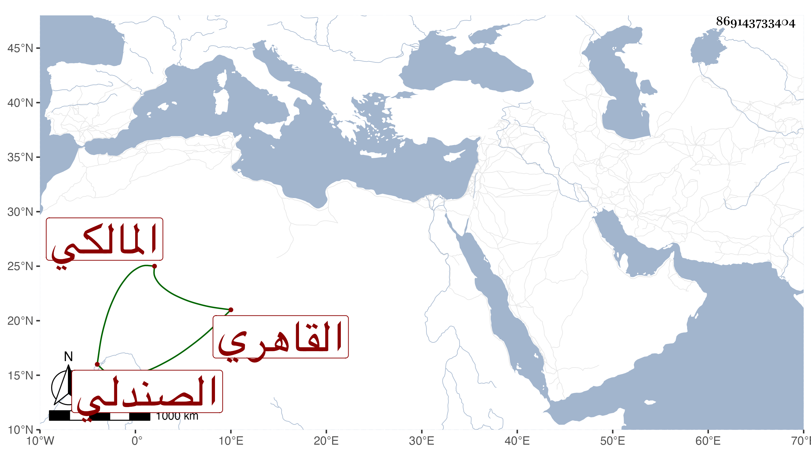

0902Sakhawi.DawLamic.ITO20230111-ara1.EIS1600.869143733404
Biography ID: 869143733404
484
محمد بن أبي بكر شمس الدين الصندلي ثم القاهري المالكي وبالمالكي يعرف . حفظ القرآن وجوده والرسالة وغيرها واشتغل يسيرا ولازم العز بن جماعة وتخرج في الكتابة بالزين بن الصائغ ومن قبله بالوسيمي وكتب نحو خمسمائة مصحف ومن نسخ البخاري كثيرا وكذا من البحر لأبي حيان وتصدى لتعليم الكتابة فانتفع به جماعة ، وتنزل في صوفية الباسطية أول ما فتحت بل كان أحد من شهد عليه بوقفية كتبها وغيره رفيقا للعز السنباطي ، وكان خيرا كثير التلاوة والصدقة طارحا للتكلف . مات قبل السبعين ظنا وقد جاز السبعين بعد أن تزوج نفيسة زوجة الأبدي وقاسى منها نكدا حتى كان يقول ياسيدتي نفيسة خلصيني من نفيسة .
